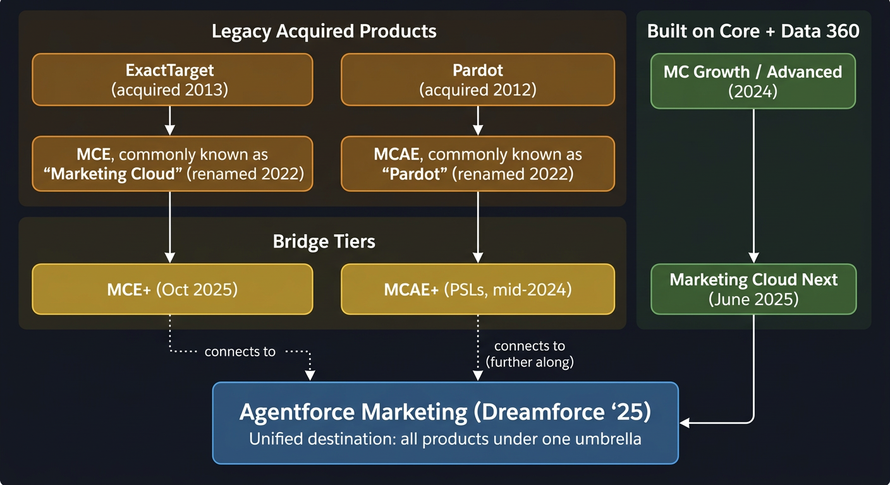
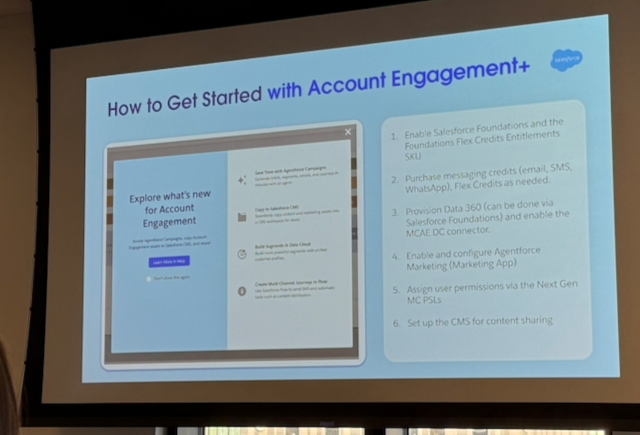
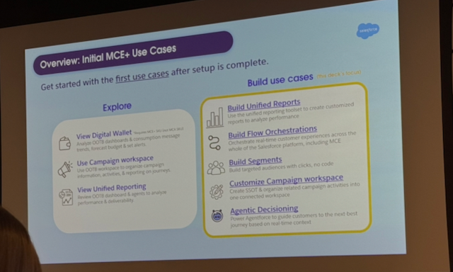

If you work at an association that runs Salesforce, you've probably noticed the marketing product landscape has more plot lines than the entire Marvel multiverse. I sat through a demo of Agentforce Marketing, MCE+, and the Spring '26 features so you don't have to untangle it alone. Here's the rundown.
The Two Worlds of Salesforce Marketing
Right now there are two parallel marketing platforms running inside the Salesforce ecosystem. Understanding this split is the key to everything else.
There's also a third track - MCAE (formerly Pardot), Salesforce's B2B marketing platform - which has its own convergence path through MCAE+. Most associations doing member communications are on the MCE side, so that's where I'll focus. But the diagram below covers all three.
World 1 is Marketing Cloud Engagement (MCE). Salesforce acquired ExactTarget back in July 2013 for about $2.5 billion. That platform became "Salesforce Marketing Cloud" in 2014, then got renamed to "Marketing Cloud Engagement" in 2022. Journey Builder, Content Builder, Automation Studio, AMPscript - if you've been working in this world, you know the tools. It's mature and powerful, but it runs on its own separate infrastructure. It was never built on core Salesforce. For most associations doing B2C-style member communications, this is probably what you're running.
World 2 is the new native platform. Marketing Cloud Growth launched in February 2024 as a genuinely new product built from scratch on the core Salesforce platform. Marketing Cloud Advanced followed at Dreamforce '24. At Connections '25 (June 2025 in Chicago), Salesforce unveiled Marketing Cloud Next as a convergence of these products into what they called a "full-funnel agentic marketing solution." Then at Dreamforce '25 (September 2025), the whole thing got folded under the Agentforce brand. Sales Cloud became Agentforce Sales. Service Cloud became Agentforce Service. Marketing Cloud became Agentforce Marketing. Each of these steps involved real product evolution, not just relabeling - but I won't pretend the naming churn hasn't been dizzying.
If you've been calling it "Marketing Cloud" this whole time, you're not wrong - but Salesforce now uses that name for about four different things. The diagram below should help sort it out.

These two worlds are not on the same infrastructure. But Salesforce is working to bring them together.
Salesforce Marketing naming cheat sheet (click to expand)
- Data Cloud is now Data 360 (renamed October 2025). This is its sixth name. I wish I were kidding.
- MCE (Marketing Cloud Engagement) - the ExactTarget legacy platform. Still running, not going away.
- MCE+ - bridge tier that adds Data 360 and new platform capabilities to existing MCE.
- Marketing Cloud Next / Agentforce Marketing - the new native platform built on core Salesforce + Data 360.
- MCAE (Marketing Cloud Account Engagement) - the old Pardot. B2B focused.
- Nonprofit Cloud is now Agentforce Nonprofit. NPSP is still available but hasn't received new features since March 2023.
The Convergence Strategy
Salesforce is very careful to call this a "convergence" and not a "migration." They are not sunsetting MCE. For large organizations - and that includes a lot of national associations - the ExactTarget platform is deeply embedded in operations. Having spent years on a Salesforce implementation myself, I can tell you: ripping out a platform that's woven into your daily workflows isn't something you do casually.
Instead, they created bridge licensing tiers. MCE+ (Marketing Cloud Engagement Plus) went GA around October 2025. It lets existing MCE customers keep their current setup while gaining access to Data Cloud (now Data 360), Flow orchestration, and the newer Agentforce capabilities. It's additive, not replacement. That's an important distinction.
At the Austin demo, I saw firsthand that Agentforce Marketing shows up as a new menu option right alongside Journeys and Contact Builder in the MCE interface. You don't lose your existing tools. You get new ones next to them and can move workloads over at your own pace. That felt reassuring to see in practice rather than just on a slide.
Salesforce showed two adoption strategies at the meeting. The Incremental path keeps your MCE access, does partial Data 360 setup, and doesn't require you to re-configure sending, consent models, or content. You explore the new stuff while your existing operations keep running.
The Accelerated path goes further - full Data 360 setup, re-configuring some sending and consent, rebuilding some content and journeys. But even this path keeps MCE access. A footnote on the presentation slide noted that tooling to help automate the transition from MCE to the new platform is planned for the second half of 2026, though I haven't been able to verify a firm timeline from any public Salesforce source.

Data 360 Is the Price of Admission
If there's one thing that came through clearly at the meeting, it's this: Data Cloud (renamed to Data 360 at Dreamforce '25 in October 2025) is now the foundation for everything new in Salesforce marketing. Segmentation, Agentforce agents, personalization, unified reporting - all of it runs on Data 360.
If your association doesn't have Data Cloud yet, that's going to need to change. The question is how much it'll cost you.
Salesforce offers a Foundations package that includes Data Cloud at no additional cost. It comes with 10,000 Data Cloud Segmentation and Activation credits. That sounds great until you realize those credits get consumed by basically everything you do - building segments, running activations, unifying profiles. For an association with tens or hundreds of thousands of contacts, those starter credits won't last long. Ask me how I know.
Some good news on the pricing front. In September 2025, Salesforce made several changes that lower the barrier to entry. Ingesting structured data from other Salesforce products (CRM, Marketing Cloud Engagement, Commerce Cloud, Marketing Cloud Personalization) into Data 360 is now free - no credits consumed. Credits were consolidated into a single fungible type (no more juggling separate sandbox and production credit pools). And credit pricing was reduced to $500 per 100,000 credits, down from the previous $1,000.
At the Austin meeting, there was also mention of a "Data Cloud Profiles" SKU that would provide flat-rate pricing for access to Data 360 for core contact data. I haven't been able to verify this from any public Salesforce source, so check with your AE if this is relevant to your org.
Budget note: You need Data 360 beyond the free tier. Work with your Salesforce AE to estimate realistic usage based on your contact volume and use cases. The Digital Wallet tool gives visibility into consumption, but nobody wants to learn about overage charges the hard way.

What Agentforce Marketing Actually Does
The demo at the Austin meeting was solid, and I'll admit I was curious to see how it held up outside of a keynote video.
You tell an AI agent to create a campaign. Something like "Create a campaign to re-engage lapsed members who haven't renewed in 90 days." The agent generates a campaign brief - a strategy document that outlines the audience, channels, messaging, and timing.
From there, the agent builds out a Campaign Preview - a planned sequence of touchpoints. Send an email on day 1, wait 2 days, send an SMS reminder, wait 5 days, send a follow-up. It drafts the content for each touchpoint too. You can review and edit everything, and you can keep talking to the agent to refine it. "Make the tone more urgent." "Add a phone call step after the second email." That kind of thing.
You can set business units and brands (useful for associations that run multiple conferences or programs under different identities) and adjust the communication tone, which affects both messaging and potentially delivery methods.
It's impressive. But the quality of what the agent produces depends entirely on the data underneath it. If your data is messy (and let's be honest, most association data is at least a little messy), the output will reflect that. Good data hygiene isn't glamorous, but it's still the thing that makes or breaks your marketing.
The Admin Concern
One thing that raised eyebrows in the room: Agentforce Marketing gives end-user marketers access to Salesforce Flows. Flows are the orchestration layer in Salesforce - powerful automation tools that have traditionally been admin-only territory.
Salesforce has added some guardrails to limit what marketing users can do with Flows, but this is worth paying attention to. If your association has a clear separation between who configures Salesforce and who uses it for marketing, this blurs that line. I'd recommend talking with your admin team about it before anything gets turned on. The people who maintain your org will want to know this is coming.
Spring '26 Features Worth Watching
Several new capabilities are landing in the Spring '26 release that I think are worth tracking, especially for associations.
Trigger MCE Emails from Flow Builder. You can now send Marketing Cloud Engagement emails directly from Salesforce Flows without leaving Flow Builder. This connects your CRM automation to your marketing communications in a way that was previously clunky. Note: this requires MCE+ licensing.
Transactional Messaging via Flows. The new platform lets you pass complex structured data from Apex classes into Flow-based email sends. Think membership renewal confirmations, CE credit notifications, event registration receipts - the kind of transactional emails associations send constantly. Important distinction: this is a Marketing Cloud Next capability using Flow Builder, not an update to the legacy MCE Transactional Messaging API.
Customizable Preference Centers. You'll be able to build branded preference centers that match your association's look and feel. If you've been stuck with generic or hard-to-customize preference pages on the new platform, this fills that gap. (MCE already had this via CloudPages and AMPscript.)
Handlebars Templating. The new platform now supports Handlebars syntax for email personalization - conditional logic, iteration, helper functions - working with Data 360 data. If your team has ever looked at AMPscript and quietly backed away, Handlebars is a friendlier starting point. This is different from the Handlebars Merge Language (HML) used in Account Engagement.
Two-Way Conversational Email. This is powered by Agentforce and it's the one that caught my attention most. Instead of one-way blast emails, recipients can reply and get AI-powered responses. Imagine a member replying to a conference reminder to ask about session times and getting an actual answer. I have a lot of questions about how this works at scale, but the concept is genuinely interesting for member engagement. Production rollout began February 2026.
Distributed Marketing & Alerts. This gives non-marketing users (chapter leaders, regional reps, volunteer coordinators) access to approved email templates with component-level locking. Marketing controls the brand and message structure. Field users customize what they're allowed to customize. For anyone who's watched a chapter leader go rogue with a brand template, this is a welcome development. This is a separate add-on license, so budget accordingly.
Business Units now supports up to 50 per org, with configuration cloning to make it easier to spin up new ones. Relevant for associations with chapters, affiliates, or multi-entity structures.
What This Means for Your Association
If you're already running MCE and it's working, take a breath. MCE isn't going away. But start planning for Data 360 if you haven't already - it's the prerequisite for everything new.
If you're mid-implementation on MCE and it's been rough, MCE+ is probably your best landing spot. Go live on MCE, add the MCE+ tier, get Data 360 set up, and start building new capabilities on the native platform. Don't try to jump straight to Agentforce Marketing alone - it's still maturing and may not handle the complexity of a large association's needs yet.
If you haven't started on Marketing Cloud at all, you're actually in a decent position. Talk to your Salesforce team about whether starting on the new platform makes sense for your size and use cases. For smaller associations with straightforward needs, the new native platform might be the right starting point. For larger orgs with complex requirements, MCE+ with a convergence plan is still the safer bet.
Whatever path you choose, get Data 360 in your budget conversation now. It's not optional anymore.
References
- Salesforce Announces Marketing Cloud Next - Official announcement from Connections '25
- What You Need to Know about the Agentforce Marketing Spring '26 Release - Salesforce blog on Spring '26 features
- Simpler, More Accessible Pricing for Data Cloud - Official Data 360 pricing changes
- Salesforce Data Cloud Renamed to 'Data 360' - Salesforce Ben on the Data 360 rebrand
- Salesforce Marketing Cloud Next (vs. MCE, MCAE, MCG, MCA) - Salesforce Ben's platform comparison guide
- Top 10 Spring '26 Updates for Salesforce Marketers - Salesforce Ben's feature roundup
- The State of Salesforce Nonprofit Offerings in 2026 - Salesforce Ben on NPSP and Nonprofit Cloud
- Salesforce Completes Acquisition of ExactTarget - Original 2013 acquisition press release